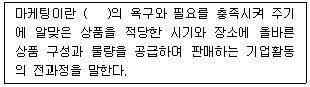
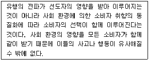
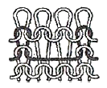
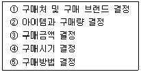
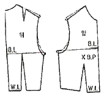

패션머천다이징산업기사 (2008-07-27 기출문제)
1과목: 패션마케팅
1. 다음 중 가격탄력성이 높은 패션제품의 특성에 해당하는 것은?
- 소비자들이 패션 제품의 가격변화에 민감하다.
- 경쟁제품이나 대체품이 거의 없는 제품이다.
- 다른 의류업체에서는 당장 개발할 수 없는 신소재로 만든 제품이다.
- 의류업체가 패션제품의 가격을 인상하여도 수요가 상대적으로 줄지 않는다.
(정답률: 알수없음)

2. 패션 머천다이저의 역할에 관한 설명 중 틀린 것은?
- 상품기획에서 디자이너와 동반자적 관계를 가지고 소비자의 감성을 정확하게 분석해야 한다.
- 상품기획에서 판촉전략에 이르기까지 다양한 마케팅 의사결정이 브랜드 이미지와 일관성을 유지하도록 해야 한다.
- 상품의 구매계획만을 담당한다.
- 패션 머천다이저는 시장정보와 소비자정보를 분석하고 이에 관련된 상품기획업무, 생산업무, 판매 및 판촉업무를 총괄하고 각 부서간의 유기적인 연결을 담당한다.
(정답률: 알수없음)
3. 의류제조업체에서 일반적으로 이루어지는 기성복 의류 생산과정을 바르게 나열한 것은?
- 원부자재 구매 → 공업용 패턴 제작 → 그레이딩 → 마킹 → 재단 → 봉제 → 검품 및 출하
- 원부자재 구매 → 그레이딩 → 마킹 → 공업용 패턴 제작 → 재단 → 봉제 → 검품 및 출하
- 원부자재 구매 → 공업용 패턴 제작 → 마킹 → 그레이딩 → 재단 → 봉제 → 검품 및 출하
- 원부자재 구매 → 마킹 → 재단 → 봉제 → 공업용 패턴 제작 → 그레이딩 → 검품 및 출하
(정답률: 알수없음)
4. 상품 계획의 목적이 아닌 것은?
- 최적의 상품
- 최적의 가격
- 최적의 장소
- 최적의 판매원
(정답률: 알수없음)
5. 점포 내부공간의 전체균형을 고려하여 시즌별 또는 특별 행사의 상품기획 컨셉을 표현하는 것으로 그 점포의 얼굴(이미지)이라고 할 수 있는 것은?
- V.P(visual presentation)
- I.P(item presentation)
- P.P(point of sales presentation)
- P.O.P(point of purchase)
(정답률: 알수없음)
6. 패션유통경로의 유형 중 위탁판매제도에 대한 설명으로 옳은 것은?
- 의류제조업체가 기획, 생산, 판매까지 책임지는 형태이다.
- 상품에 대한 판매와 재고를 점포에서 책임진다.
- 우리나라 대부분 제조업체들이 지향하고 있다.
- 대리점주가 의류업체나 도매시장에 상품을 판매하고 재고도 책임진다.
(정답률: 알수없음)
7. 가격 구성요소의 설명 중 옳은 것은?
- 이익은 가격에서 제조원가를 제한 값이다.
- 제조원가는 인건비를 제외한 원자재의 재료비이다.
- 총원가는 고정비용과 변동비용을 포함한다.
- 마케팅 원가와 제조원가를 더하면 총원가가 된다.
(정답률: 알수없음)
8. 상품의 판매를 증대시키기 위한 촉진(promotion)의 요소에 포함되지 않는 것은?
- 잡지광고
- 패션쇼
- 판매원
- 브랜드
(정답률: 알수없음)
9. 소비자들이 제품가격의 고ㆍ저를 평가할 때 비교기준으로 사용되는 가격은?
- 단수가격
- 경쟁가격
- 준거가격
- 세일가격
(정답률: 알수없음)
10. 리테일 머천다이징 프로세스의 첫 단계는?
- 소비자 수요 예측
- 제품의 가격결정
- 구매업체 물색
- 제품의 광고와 판매촉진
(정답률: 알수없음)
11. 시장세분화의 기준이 아닌 것은?
- 연령
- 라이프스타일
- 가격 수준
- 정치 성향
(정답률: 알수없음)
12. 다음 중 세계적인 디자이너 콜렉션이 열리는 곳은?
- 베를린
- 뉴욕
- 이스탄불
- 오사카
(정답률: 알수없음)
13. 소비자의 구매 대리인(buying agent)역할을 하는 직종은?
- 직물 디자이너
- 패션 디자이너
- 리테일 머천다이저
- 모델리스트
(정답률: 알수없음)
14. 다음 패션 정보원들 중 상업적 정보원천은?
- 시험구매
- 신문기사
- 친구
- 판매원
(정답률: 알수없음)
15. 시장을 세분화하지 않고 전체시장을 대상으로 하며 제품의 동질성이 높은 경우와 소비자의 제품에 대한 반응이 동질적인 경우에 효과적인 마케팅 전략은?
- 비차별적 마케팅 전략
- 완전한 시장세분화 전략
- 차별적 마케팅 전략
- 집중적 마케팅 전략
(정답률: 알수없음)
16. 마케팅 발전단계를 7단계로 구분할 때 급속히 변화하는 외부환경에 능동적으로 대응하게 위해 의사 결정의 중요성이 대두된 시대는?
- 마케팅 정보시스템 시대
- 생태학적 영역 지향 시대
- 전략적 마케팅 시대
- 세일즈 지향 시대
(정답률: 알수없음)
17. 다음 설명의 ( )에 알맞은 단어는?

- 공급자
- 생산자
- 소비자
- 소매업자
(정답률: 알수없음)
18. 패션산업에 종사하는 전문가들과 그 활동에 대해 설명한 것 중 틀린 것은?
- 모델리스트(modelist) : 자신의 디자인을 머슬린으로 패턴제작까지 하는 디자이너
- 컨버터(converter) : 미가공의 원직물을 완성품으로 만들어 판매하는 전문가
- 그레이더(grader) : 대량생산에 사용되는 원단의 요척 산출 전문가
- 컬러리스트(colorist) : 컬러정보수집, 컬러방향설정, 아이템별/모델별 컬러설정 전문가
(정답률: 알수없음)
19. 패션머천다이징의 과정으로 옳은 것은?
- 표적시장 선정 → 마케팅 정보 분석 → 상품구성 → 생산 → 가격결정 → 판매 및 유통
- 표적시장 선정 → 마케팅 정보 분석 → 상품구성 → 가격결정 → 생산 → 판매 및 유통
- 마케팅 정보 분석 → 표적시장 선정 → 상품구성 → 가격결정 → 생산 → 판매 및 유통
- 마케팅 정보 분석 → 표적시장 선정 → 상품구성 → 생산 → 가격결정 → 판매 및 유통
(정답률: 알수없음)
20. 유행전파이론 중 다음의 설명에 해당되는 것은?

- 수평전파이론
- 대중확산이론
- 하향전파이론
- 집합선택이론
(정답률: 알수없음)
2과목: 패션소재기획
21. 양모섬유의 특징으로 옳은 것은?
- 권축으로 인해 함기량이 많아 따뜻하다.
- 양모는 알칼리에 강하고, 산에는 다소 약하다.
- 천연섬유 중 유일한 장섬유로 촉감이 부드럽다.
- 열전도성이 높아 겨울용 고급 옷감으로 사용된다.
(정답률: 알수없음)
22. 소재기획시 소재의 선택조건과 가장 관계가 먼 것은?
- 품질의 안정성
- 화려한 이미지
- 원가의 타당성
- 디자인과의 적합성
(정답률: 알수없음)
23. 편성물을 직물과 비교했을 때 특징이 아닌 것은?
- 편성물이 직물보다 신축성이 크다
- 편성물이 직물에 비해 구김이 잘 생기지 않는다.
- 편성물이 직물보다 공기 함기율이 적다.
- 편성물이 마찰에 대해 매우 약해서 내구성이 직물보다 못하다.
(정답률: 알수없음)
24. 다음 중 펠트(felt)의 제조원리와 관계가 있는 것은?
- 면의 내알칼리성
- 양모의 축융성
- 견의 드레이프성
- 나일론의 열가소성
(정답률: 알수없음)
25. 다음 중 견섬유의 성질이 아닌 것은?
- 염색성이 양호하다.
- 내일광성이 우수하다.
- 내알칼리성이 적다.
- 수분 흡수가 양호하다.
(정답률: 알수없음)
26. 다음 품질 표시 중 순수한 모섬유가 99.7% 이상으로서 염색, 인장강도 등의 기준치에 맞는 제품에 대해서 부착 가능한 것은?
(정답률: 알수없음)
27. 섬유 제조시 방사 방법에 대한 연결이 틀린 것은?
- 레이온 - 습식방사
- 폴리에스테르 - 용융방사
- 폴리프로필렌 - 용융방사
- 폴리아미드 - 건식방사
(정답률: 알수없음)
28. 저지(jersey stitch)에 대한 설명으로 틀린 것은?
- 가장자리가 휘감기는 성질이 있다.
- 한 코가 끊어지면 사다리꼴로 풀리는 현상이 생긴다.
- 경방향보다는 위방향의 신도가 훨씬 크다.
- 표리가 같은 외관을 보여준다.
(정답률: 알수없음)
29. 소재의 분위기와 촉감에 따라 감성을 분류하고, 이에 적합한 소재를 연결하였을 때 적합하지 않는 것은?
- 젖은(wet) - 벨베틴(velveteen)
- 매끄러운(flat) - 새틴(satin)
- 얇은(thin) - 퀄팅(quilting)
- 딱딱한(hard) - 데님(denim)
(정답률: 알수없음)
30. 편직 소재 중 원단의 표면에 루프(loop)가 나와 있는 소재는?
- 하이파일(high file)
- 테리(terry)
- 벨루어(velour)
- 인타르시아(intarsia)
(정답률: 알수없음)
31. 실용주의, 기능주의 등을 표방하면서 패션의 새로운 패러다임으로 분석된 메가 트렌드(mega trend)요인은?
- 글로벌(global)
- 퍼지(fuzzy)
- 에콜로지(ecology)
- 에스닉(ethnic)
(정답률: 알수없음)
32. 직물의 표면과 이면의 판별 방법으로 틀린 것은?
- 변사의 품명, 기타의 표식이 있는 방향이 표면이다.
- 선염의 경우 무늬가 뚜렷하게 보이는 방향이 표면이다.
- 섬유의 잔털이 많은 방향이 표면이다.
- 모직물의 경우는 광택이 많은 방향이 표면이다.
(정답률: 알수없음)
33. 미세한 유리가루를 원단에 부분적으로 도포하여 주간에는 햇빛에 의한 스파클(sparkle)효과를 주며 야간에는 불빛에 의한 반사효과를 발휘하는 금속성 광택이 발생하는 소재는?
- 실켓(silket) 소재
- 기모(raising) 소재
- 재귀반사(reflective material) 소재
- 투명필름 라미네이트(visible laminate) 소재
(정답률: 알수없음)
34. 다음 그림과 같은 조직은?

- 양면편 조직
- 레이스편 조직
- 자카드편 조직
- 부편 조직
(정답률: 알수없음)
35. 소재의 발주 중 기획ㆍ설계단계에 해당되지 않는 것은?
- 소재에 관한 정보수집 및 분석
- 수량, 납기, 가공비 및 납품방법 결정
- 발주서 및 원가계산
- 후가공 처리 방법 결정
(정답률: 알수없음)
36. 소재기획과정에서는 여러 종류의 정보들이 필요하며 또한 이 정보들을 종합하고 배합하여 새로운 기획안을 탄생시킨다. 이러한 소재기획에 필요한 정보와 거리가 먼 것은?
- 패션 트렌드
- 생산가격
- 소비자 의사결정
- 해외업체의 동향
(정답률: 알수없음)
37. 소비자가 의류 제품을 착용 중 봉제 부위기 미어졌을 경우 원단의 품질을 체크할 수 있는 가장 적합한 시험항목은?
- 마모강도
- 스낵성
- 필링
- 실 미끄럼 저항도
(정답률: 알수없음)
38. 고저스(gorgeous)의 이미지는?
- 경쾌하고 활동적이며 생동력 있는 기능적인 이미지
- 심플하면서도 여성스러운 인상과 고급스러운 고품격의 도시 감각적인 세련된 이미지
- 원숙하면서 화려한 여성미를 주는 이미지
- 여성의 체형미를 살린 품위 있고 우아하면서 정숙한 분위기를 가진 이미지
(정답률: 알수없음)
39. 의류의 판매시점과 생산시점을 가급적 가까이 해서 위험 부담률을 줄이려는 시스템은?
- 배달 시스템(delivery system)
- 피드백 시스템(feed back system)
- QR 시스템(quick response system)
- POS 시스템(point of sales system)
(정답률: 알수없음)
40. 패션디자이너들이 자신들의 옷을 통해 자신만의 스타일을 표현하기 위해 주로 사용된 소재에 대한 연결로 틀린 것은?
- 가브리엘 샤넬(Gabrielle Chanel) - 저지
- 이세이 미야케(Issey Miyake) - 주름
- 마들렌 비요네(Madelenine Vionnet) - 양모
- 파코라반(Paco Rabanne) - 부직포
(정답률: 알수없음)
3과목: 유통관리 및 광고
41. 점포에 대한 설명으로 틀린 것은?
- 상품판매의 장이면서 지역생활의 장이다.
- 고객에게 각종 서비스와 정보를 제공하는 공간을 의미한다.
- 단순한 건축시설과 상업시설이므로 만남의 장이 되어서는 곤란하다.
- 점포의 환경은 점포 내부환경과 외부환경으로 나누어진다.
(정답률: 알수없음)
42. 인터넷 전자상거래의 특성이 아닌 것은?
- 유통채널이 단순하다.
- 공간적 제약이 없다.
- 시간적 제약이 없다.
- 상품가격이 비싸다.
(정답률: 알수없음)
43. 구매계획을 수립하기 위한 순서가 옳게 나열된 것은?

- ① → ② → ③ → ④ → ⑤
- ③ → ④ → ① → ② → ⑤
- ① → ③ → ④ → ⑤ → ②
- ③ → ④ → ⑤ → ① → ②
(정답률: 알수없음)
44. 영업계획 중 실매기의 올바른 전략이 아닌 것은?
- 아이템 전략과 상품 비축
- 볼륨 전개
- 중심 존의 상품 다양성 축소
- 전체 디자인수의 축소, 정리
(정답률: 알수없음)
45. 패션상품의 분류기준 중 패션 수용도에 의한 상품분류가 아닌 것은?
- basic 상품
- better zone 상품
- new basic 상품
- trend 상품
(정답률: 알수없음)
46. 상품구색 수준의 다양성을 나타내는 재고관리단위(SKU)에 대한 설명으로 틀린 것은?
- 스타일이 5, 사이즈가 5, 색상이 4이면 그 품목의 구색 다양성은 14SKU이다.
- SKU에는 해당품목의 스타일, 사이즈, 색상에 대한 정보가 들어있다.
- SKU의 숫자가 적다면 상품의 주문, 생산, 배송, 진열이 간단하다.
- SKU 숫자가 많은 상품을 모두 취급하다 보면 품절이나 과잉재고 등의 위험이 따른다.
(정답률: 알수없음)
47. 매장에서 상품관리를 하는 이유가 될 수 없는 것은?
- 표적고객의 수용에 대응하기 위해
- 매장의 이익을 증대시키기 위해
- 상품에 투하되는 자본을 최소화하기 위해
- 매장의 재고를 최소화하기 위해
(정답률: 알수없음)
48. 광고매체별 특성의 연결이 옳은 것은?
- 옥외광고 - 반복 노출도가 낮다.
- 직접우편 - 청중을 선별할 수 있다.
- 전화번호 - 광고 구매대기 시간이 짧고 창의성이 충분히 발휘될 수 있다.
- 브로셔 - 기업의 완전 통제와 메시지의 극화가 가능하다.
(정답률: 알수없음)
49. 생산자가 직접 소매상에게 상품을 제공하고 판매한 후 일정 수수료를 소매상에게 주고 반품을 가능하게 하는 유통경로(distribution-channel)는?
- 특약점
- 대리점
- 직영점
- 재래시장
(정답률: 알수없음)
50. 소매점에서 매상과 이익확보를 위한 고회전 상품으로, 별로 유행을 타지 않으며 가격의 고저에도 별로 상관이 없는 상품은?
- 보완상품
- 중점상품
- 전략상품
- 판매촉진상품
(정답률: 알수없음)
51. 전략 상품의 설명으로 옳은 것은?
- 기본적으로 항상 구비되는 상품
- 유행성이 강하지 않은 상품
- 소매점의 수준향상을 위한 상품
- 표준사이즈 이외의 상품
(정답률: 알수없음)
52. 판매촉진 중 매체를 통한 뉴스형태로 나타나는 것은?
- 광고
- 홍보
- VMD
- 디스플레이
(정답률: 알수없음)
53. 다음 브랜드 중 성격이 다른 하나는?
- 갭(GAP)
- 막스 앤 스펜서(Marks & Spencer)
- 넥스트(Next)
- 조르지로 아르마니(Giorgio Armani)
(정답률: 알수없음)
54. 비주얼 머천다이징의 효과가 아닌 것은?
- 매장의 이미지 강화 효과
- 상품가치의 증대 효과
- 신상품 개발 효과
- 상품회전 개선 효과
(정답률: 알수없음)
55. 상품구성의 깊이(depth)에 해당하는 것은?
- 수요가 계속 있어서 항상 갖추고 있어야 하는 기본상품
- 각 품목의 양으로 특정상품의 종류 내에서 스타일 수
- 소비자에게 제공하는 품목 수
- 구색을 갖추는 상품의 종류
(정답률: 알수없음)
56. 다음 중 비주얼 머천다이징의 요소가 아닌 것은?
- 서비스
- 인테리어
- 디스플레이
- 코디네이션
(정답률: 알수없음)
57. 다음 중 스페셜 이벤트에 포함되지 않는 것은?
- 무료견본
- 소재전시회
- 패션쇼
- 홍보
(정답률: 알수없음)
58. TV 방송광고의 종류별 특징이 아닌 것은?
- Program 광고 - 프로그랩 전후에 행해지는 광고로 방송 시간의 50/100 이내로 제한
- Spot 광고 - 방송 프로그램과 프로그램 사이의 광고로 시간마다 2회 내로 제한
- ID 광고 - 방송순서의 고지시에 자막으로 하는 광고로 1회 10초 이내로 제한
- 협찬광고 - 상업성이 배제되며 회사명만 고지
(정답률: 알수없음)
59. 트렌드 상품에 관한 설명으로 옳은 것은?
- 지난 시즌까지의 베이직 상품
- 누구나 기본적으로 갖추고 있는 상품
- 패션을 가장 빨리 받아 들인 상품
- 내셔널 브랜드의 상품으로 캐릭터가 강한 상품
(정답률: 알수없음)
60. VMD의 목적으로 틀린 것은?
- 점포의 이미지업
- 상품이나 점포 이미지의 비차별화
- 판매 효율 향상
- 즐거운 쇼핑 분위기 제공
(정답률: 알수없음)
4과목: 패션디자인론 및 의복구성학
61. 안감의 기능이 아닌 것은?
- 솔기 등 의복 내부를 가려준다.
- 겉감의 형태 안정성을 유지시켜준다.
- 적절한 색상과 무늬의 선택으로 겉감의 디자인 효과를 높여준다.
- 겉감의 신축성을 높여준다.
(정답률: 알수없음)
62. 봉사의 규격에 관한 설명 중 틀린 것은?
- 1g당 실의 길이(m)를 번수로 정한 것을 미터식 번수(Metric count)라 한다.
- 900m당 실의 무게를 g으로 나타낸 것을 데니어(Denier)라 한다.
- 1000m당 실의 무게를 g으로 나타낸 것을 텍스(Tex)라 한다.
- 1Lb당 실의 길이 300yd를 기준으로 하여 번수를 정한 것을 영국식 면사 번수라 한다.
(정답률: 알수없음)
63. 다음 중 가장 활동하기 편한 소매산의 높이는?
- (AH / 4) + 3
- (AH / 4) + 2
- AH / 4
- AH / 5
(정답률: 알수없음)
64. 패션디자인의 조건이 아닌 것은?
- 경제성
- 모방성
- 심미성
- 기능성
(정답률: 알수없음)
65. 마킹의 종류 중 다른 치수대를 이어서 배치하여 경계선을 중심으로 둘 이상의 구획이 생기는 배치방법은?
- 한 벌 배치
- 맞물림 배치
- 다중치수 혼합 배치
- 반벌 배치
(정답률: 알수없음)
66. 신사복용 심지로서 가장 오랜 역사를 가지고 있으며 신축성이 적고 강도가 높은 심지는?
- 합성섬유심지
- 면/합성 혼방심지
- 모심지
- 마심지
(정답률: 알수없음)
67. 상의의 밑단, 소매솔기, 요크선, 바지단 등에 옷감의 올을 풀어 장식하는 것으로 미국 인디언 복식 등 민속풍 디자인에서 흔히 사용되는 장식방법은?
- 파이핑(piping)
- 프린징(fringing)
- 파고팅(fagoting)
- 바인딩(binding)
(정답률: 알수없음)
68. 다음 중 파커링이 일어나는 원인이 아닌 것은?
- 바늘의 굵기가 소재에 비해 굵기 때문
- 천과 다른 종류의 봉사를 사용했기 때문
- 밀도가 높고 얇은 옷감을 사용했기 때문
- 윗실과 밑실의 장력이 같기 때문
(정답률: 알수없음)
69. 유행(fashion)의 설명 중 틀린 것은?
- 특정한 시기에 한 집단 구성원에 의하여 채택되는 물질적, 정신적 집단행동이다.
- 현재의 있는 그대로를 보존하려는 관습과는 다르다.
- 언어나 사고 등 무형의 형태에는 나타나지 않는다.
- 시간에 따른 변화가 중요하다.
(정답률: 알수없음)
70. 소매원형에서 소매산과 소매너비와의 관계를 설명한 것 중 옳은 것은?
- 소매산이 높으면 소매너비가 좁아져서 불편하다.
- 소매산이 높으면 소매너비가 넓어져서 모양이좋다.
- 소매산이 낮으면 소매너비가 좁아져서 불편하다.
- 소매산이 낮으면 소매너비가 좁아져서 평상복에 쓰인다.
(정답률: 알수없음)
71. 다음과 같은 패턴 수정이 필요한 경우는?

- 상반신이 굴신체의 보정
- 상반신 반신체의 보정
- 처진 어깨의 보정
- 뚱뚱한 체형의 보정
(정답률: 알수없음)
72. 봉제 시 재봉 바늘의 열 발생과 가장 관련이 없는 것은?
- 재봉기의 회전속도
- 소재의 두께
- 소재의 염색성
- 소재의 밀도
(정답률: 알수없음)
73. 색채의 속성 중 명도에 따라 가장 많은 영향을 받는 색의 감정은?
- 색채의 중량감
- 색채의 향기
- 색채의 강약감
- 색채의 온도감
(정답률: 알수없음)
74. 다음 중 Main 작업지시서 내용에 반드시 포함되어야 하지 않아도 되는 항목은?
- 완성품 치수
- 원자재의 혼용율과 소요량
- 소비자 구매가
- 부자재의 종류와 소요량
(정답률: 알수없음)
75. 어깨가 처진 체형의 경우 가슴 다트 위의 진동 둘레와 뒤 어깨 밑에 군주름이 생길 때 패턴의 올바른 보정 방법은?
- 어깨 경사를 내려주고 이에 따라 줄어든 진동둘레 만큼 진동 밑을 내려준다.
- 어깨 경사를 올려주고 이에 따라 늘어난 진동둘레 만큼 진동 밑을 올려준다.
- 어깨를 연장해주고 어깨 끝 점 내려간 만큼 진동 밑을 내려준다.
- 어깨를 줄여주고 어깨 끝 점 올라간 만큼 진동 밑을 올려준다.
(정답률: 알수없음)
76. 시간 경과에 따른 색의 밝기를 조절하는 눈의 작용은?
- 동화 현상
- 항상 현상
- 잔상 현상
- 대비 현상
(정답률: 알수없음)
77. 조화의 미를 이루는 한 요소로서 부분과 부분이 분리될 수 없으며 상호 종속적이고 모두가 부합되어 서로 보완적인 효과를 거두는 패션디자인의 원리는?
- 통일
- 리듬
- 비례
- 강조
(정답률: 알수없음)
78. 웨이스트 라인을 기준으로 바디스(bodies)와 스커트의 두 부분을 황금 분할 비율로 할 때 비율로 옳은 것은?
- 1 : 1.414
- 1 : 1.8
- 5 : 8
- 2 : 1
(정답률: 알수없음)
79. 의복디자인의 일부나 장식품류 등 작은 것에 나타나며, 가시성이 높고 시장 수명이 짧은 것은?
- 패드
- 클래식
- 문화
- 패션
(정답률: 알수없음)
80. 대칭균형을 이용한 디자인이 적절한 의복에 해당하는 것은?
- 스포츠 웨어
- 개성이 강한 무대복
- 교복 또는 제복
- 드레시한 파티복
(정답률: 알수없음)
5과목: 패션정보분석
81. 표본조사의 조사자료를 얻을 수 있는 방법 중 응답자 접촉 방법이 아닌 것은?
- 전화조사
- 관찰
- 직접면접
- 우편조사
(정답률: 알수없음)
82. Fabric의 트렌드 분석 항목에 해당되지 않는 것은?
- 광택(luster)
- 촉감(touch)
- 아이템(item)
- 마무리 공정(finishing)
(정답률: 알수없음)
83. 다음 중 정보 처리 과정의 순서가 옳은 것은?
- 분류 → 수집 → 분석 → 보관 → 활용
- 수집 → 분류 → 분석 → 보관 → 활용
- 분류 → 수집 → 보관 → 분석 → 활용
- 수집 → 분석 → 분류 → 보관 → 활용
(정답률: 알수없음)
84. 패션머천다이징 관련정보와 조사방법의 연결이 틀린 것은?
- 시장 정보 - 소매점 조사
- 소비자 정보 - 라이프스타일 조사
- 패션 정보 - 패션경향 조사
- 판매실적 정보 - 관련기술 조사
(정답률: 알수없음)
85. 어패럴메이커의 내부환경요인이 아닌 것은?
- 에스닉(ethnic) - 모던(modern)
- 로맨틱(romantic) - 매니쉬(manish)
- 엘레강스(elegance) - 페미닌(feminine)
- 소피스티케이트(sophisticate) - 컨츄리(country)
(정답률: 알수없음)
86. 복원중(문제 오류로 문제 및 보기 내용이 정확하지 않습니다. 정확한 내용을 아시는 분께서는 오류신고를 통하여 내용 작성 부탁드립니다. 정답은 3번입니다.)
- 복원중
- 복원중
- 복원중
- 복원중
(정답률: 알수없음)
87. 자료수집 방법 중 서베이(survey)법을 이용할 때의 설명으로 옳은 것은?
- 응답자가 답하기 꺼려하는 사적인 질문은 설문지의 마지막에 질문한다.
- 개방형 질문형태는 자료 수집 후 분석이 용이하다.
- 어려운 질문은 설문지의 서두에 배치하는 것이 좋다.
- 선택형 질문형태는 조사자가 설문지 작성을 용이하게 할 수 있다.
(정답률: 알수없음)
88. 경쟁사의 분석 절차 과정으로 옳은 것은?
- 경쟁사의 확인 → 경쟁사의 목표 파악 → 경쟁사의 전략 확인 → 경쟁사의 평가 → 대상 경쟁사의 선택 → 경쟁사의 반응 파악
- 경쟁사의 목표 파악 → 경쟁사의 전략 확인 → 경쟁사의 평가 → 경쟁사의 반응 파악 → 경쟁사의 확인 → 대상 경쟁사의 선택
- 경쟁사의 목표 파악 → 경쟁사의 전략 확인 → 경쟁사의 평가 → 경쟁사의 반응 파악 → 대상 경쟁사의 선택 → 경쟁사의 확인
- 경쟁사의 확인 → 경쟁사의 목표 파악 →경쟁사의 전략 확인 → 경쟁사의 평가 → 경쟁사의 반응 파악 → 대상 경쟁사의 선택
(정답률: 알수없음)
89. 소비자의 라이프스타일을 AIO법으로 조사하고자 할 때 측정 항목이 아닌 것은?
- 소비자의 행위
- 소비자의 욕구
- 사회적, 개인적 문제들에 대한 의견
- 주변 사물에 대한 관심
(정답률: 알수없음)
90. 라이프스타일에 영향을 주는 요인이 아닌 것은?
- 기업
- 가족
- 개인의 문화
- 준거집단
(정답률: 알수없음)
91. 소비자 조사방법 중 관찰 조사에 해당되는 것은?
- 표본 조사
- 거리패션 조사
- 구매실적 조사
- 간행물에서 얻은 2차 자료 조사
(정답률: 알수없음)
92. 판매실적 정보 분석내용이 아닌 것은?
- 상품기획 컨셉 확인
- 구매패턴 및 라이프스타일 조사
- 상품판매 및 판매 촉진 전략의 검토
- 상품구성 및 물량계획의 적합도 확인
(정답률: 알수없음)
93. 패션산업분야에서 라이프스타일 연구를 중요시 하는 이유가 아닌 것은?
- 사회적 경향이나 생활의식 동향의 예측
- 브랜드별 특성에 따른 색채 경향 예측
- 소비자 행동에 대한 새로운 설명모델의 제시
- 보다 유용한 시장세분화 기준의 기대
(정답률: 알수없음)
94. 현대의 소비시장이 다변화되고 경쟁이 치열해지면서 그 필요성이 더욱 고조되고 있는 조사는?
- 판매실적 조사
- 시장 조사
- 패션트렌드 조사
- 국내외 학술 조사
(정답률: 알수없음)
95. 다음 중 패션기업의 외적 환경요인이 아닌 것은?
- 인구통계적 환경
- 기업문화적 환경
- 기술적 환경
- 자연적 환경
(정답률: 알수없음)
96. 다음 중 소비자 조사에 필요한 요소가 아닌 것은?
- 광고효과
- 라이프스타일
- 교육 및 소득수준
- 프로모션 활동
(정답률: 알수없음)
97. 다음 중 생산관리나 재고관리가 해당되는 정보는?
- 소비자 정보
- 패션 정보
- 판매실적 정보
- 관련산업 정보
(정답률: 알수없음)
98. 패션정보의 세부적인 요소와 활용방법이 틀린 것은?
- 스타일은 다양한 패션이미지로 표현되며 세부장식에 이용될 부자재의 종류가 해당된다.
- 색채는 색상과 색조로 구분되며, 색상은 지나간 시즌의 색상군의 부활과 새로운 색상 도입을 분석하며 색조는 패션이미지에 적합한 색조와 그 효과를 말한다.
- 소재는 다양한 섬유에 대한 선호경향인 원사와 패션 이미지 존별 적합한 직물의 내용만으로 분류된다.
- 문양은 직물 패턴의 종류와 새로운 프린트 기법과 그 효과로 분류된다.
(정답률: 알수없음)
99. 패션트렌드 정보기획에 있어서 기획의 분류에 대한 설명으로 틀린 것은?
- 제안형 기획 - 최고경영진이나 혹은 상급자로부터 특별한 지시가 없는데도 자발적으로 발안하는 기획
- 답신형 기획 - 상부로부터의 명령이나 지시가 있거나 혹은 거래선으로부터 제안을 요구받고 이에 대응하는 기획
- 신제품개발 기획 - 경쟁관계에 있는 상품에 대응하는 새로운 상품 개발을 위해 신규사업기획
- 이벤트 기획 - 판매촉진이나 기업홍보, 마케팅 측면에서 각종 행사를 기획 ㆍ 시행하기 위해 행하는 기획
(정답률: 알수없음)
100. 다음 중 대표적인 소재 박람회가 아닌 것은?
- Premiere Vison (프랑스)
- Fabrex (영국)
- Interstoff World (독일)
- Pitti immgine Filati (이탈리아)
(정답률: 알수없음)
설명: 가격탄력성이 높은 제품은 가격이 변화하면 수요가 크게 변화하는 제품을 말합니다. 패션 제품은 대체품이 많고 경쟁이 치열한 산업이기 때문에 소비자들은 가격이 변화하면 다른 제품으로 대체할 가능성이 높습니다. 따라서 패션 제품은 가격탄력성이 높은 제품으로 분류됩니다.